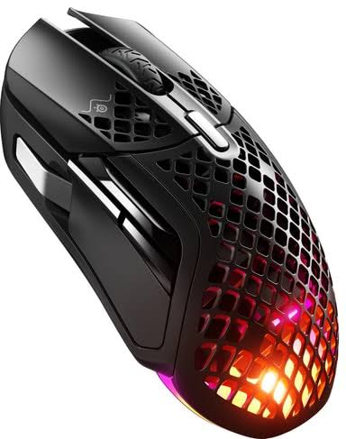

G-Setup

Specifikationer - SteelSeries Aerox 5 Wireless
Vikt: 74 gram
DPI: 18 000
Sensor: optisk
Anslutning: 2,4 GHz Quantum 2.0 Wireless, Bluetooth 5.0 eller
USB-C-kabel
Programmerbara knappar: 9st
Sidoknappar: 5st inkl upp-ner vippknapp
Batteritid: Upp till 180 timmar
Snabbladdning: Cirka 40 timmars användning efter 15 minuters
laddning
RGB: Ja
Referensbild: Elgiganten.se